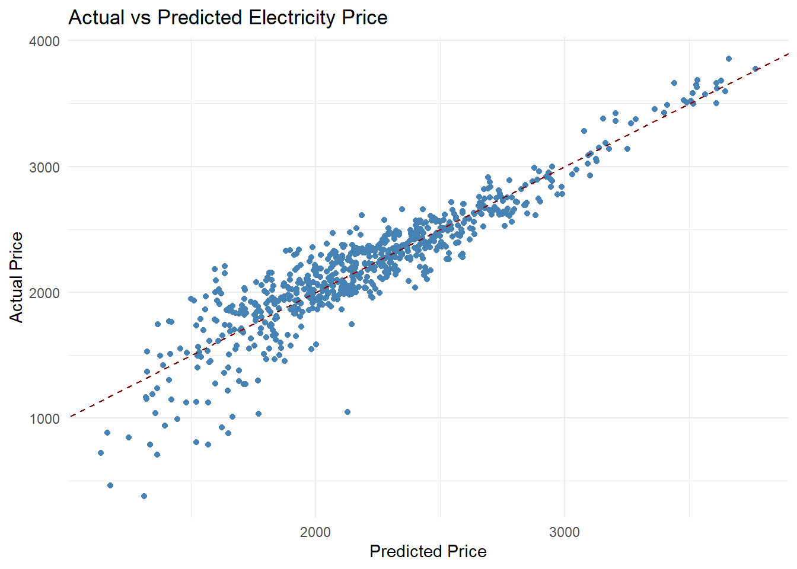

Electricity has increasingly become a tradable commodity on global and Turkish stock exchanges, subject to specific regulations and limitations. In a liberalized market, it is uniquely characterized by a third dimension—time—alongside price and volume. In Turkey, electricity trading takes place across multiple market platforms, all overseen and regulated by the Energy Exchange Istanbul (EXIST). This project aims to analyze the formation of electricity prices and investigate the impact of total electricity demand as well as electricity generation from various sources on price formation. Specifically, the daily impact of renewable energy generation on electricity prices will be examined, while the influence of natural gas prices on the monthly average electricity price will also be explored. Electricity prices will be forecasted using multiple linear regression models at both daily and monthly resolutions, and the results will be evaluated accordingly.
2. Data
This project will utilize three main data sources related to the electricity market or influence it. EPİAŞ (Energy Exchange Istanbul), TEİAŞ (Turkish Electricity Transmission Corporation), and BOTAŞ (Petroleum Pipeline Corporation) are public institutions in Turkey that act as decision-makers and regulators in the electricity market. The open-access data provided by these institutions will be used throughout the analysis and forecasting processes of the project. The whole data used in this project starts in first hour of 2023 and end at the end of 2024.
2.1 Data Source
This project will utilize three main data sources related to the electricity market or influence it. EPİAŞ (Energy Exchange Istanbul), TEİAŞ (Turkish Electricity Transmission Corporation), and BOTAŞ (Petroleum Pipeline Corporation) are public institutions in Turkey that act as decision-makers and regulators in the electricity market. The open-access data provided by these institutions will be used throughout the analysis and forecasting processes of the project. Data sources can be reached by clicking links below.
Data related to the Day-Ahead Market will be obtained from EPİAŞ. The data sourced from EPİAŞ can be categorized under three main headings.
FDDP (Final Daily Production Program): This data is provided at an hourly resolution for 12 different types of energy sources. It includes the planned generation amounts for the following day submitted by power plants operating under each source category. Every day, power plants enter their generation schedules into the system by 4 PM, and EPİAŞ collects and publishes this data aggregated by source type.
Real-Time Consumption: This data represents the total amount of electricity consumed across Turkey. It is provided on an hourly basis and can be referred to as the total electricity demand.
MCP (Market Clearing Price): This data refers to the electricity price determined for each hour in the Day-Ahead Market, formed by matching supply and demand for the traded electricity.
Natural gas tariff data has been sourced from BOTAŞ. The prices of natural gas used for electricity generation are determined by BOTAŞ. Additionally, water inflow data to the main basin dams, provided by TEİAŞ, may be used if deemed necessary.
2.3 Reason of Choice
The electricity market consists of various sub-markets. Making accurate price forecasts for short-term and long-term electricity sales can create significant added value. Especially in long-term purchase or sale agreements, forecasting electricity prices can facilitate more profitable commercial deals while minimizing risk. For instance, the analyses and models developed in this project can help establish a relationship between renewable energy generation and electricity prices over specific periods. These forecasts can then be used to assess buy and sell offers in the market for future periods, enabling more informed and strategic positioning.
2.4 Preprocessing
In the preprocessing stage, the data stored in Excel files was converted into RData format. No additional preprocessing steps were required at this stage.
Warning: There was 1 warning in `summarise()`.
ℹ In argument: `across(where(is.numeric), mean, na.rm = TRUE)`.
ℹ In group 1: `date = 2023-01-01`.
Caused by warning:
! The `...` argument of `across()` is deprecated as of dplyr 1.1.0.
Supply arguments directly to `.fns` through an anonymous function instead.
# Previously
across(a:b, mean, na.rm = TRUE)
# Now
across(a:b, \(x) mean(x, na.rm = TRUE))
The following objects are masked from 'package:base':
as.Date, as.Date.numeric
demand_yoy <- epias_merged %>%filter(year(date) %in%c(2023, 2024)) %>%arrange(date, hour) %>%mutate(year =year(date),doy =yday(date),datetime =as.POSIXct(paste(date, hour), format ="%Y-%m-%d %H:%M") ) %>%group_by(year) %>%arrange(datetime) %>%mutate(demand_7day_avg =rollmean(demand, k =24*7, fill =NA, align ="right") ) %>%ungroup()ggplot(demand_yoy, aes(x = doy, y = demand_7day_avg, color =as.factor(year))) +geom_line(size =1.2) +labs(title ="Year-over-Year Demand Comparison (7-Day Moving Average)",x ="Day of Year",y ="Demand (MW)",color ="Year" ) +scale_color_manual(values =c("2023"="purple", "2024"="gold")) +expand_limits(y =20000) +theme_minimal() +theme(plot.title =element_text(hjust =0.5, face ="bold") )
Warning: Removed 334 rows containing missing values or values outside the scale range
(`geom_line()`).
# Gerekli paketlerlibrary(dplyr)library(car)
Zorunlu paket yükleniyor: carData
Attaching package: 'car'
The following object is masked from 'package:dplyr':
recode
library(ggplot2)# 1. Veriyi hazırlama: sadece gerekli sütunları seç ve eksik değerleri çıkarreg_data <- epias_simplified_daily %>%select(price, cheap_thermal, naturalgas, importedcoal, renewables, demand, solar, dam, natgasprice) %>%na.omit()# 2. Regresyon modeli oluşturmodel <-lm(price ~ cheap_thermal + naturalgas + importedcoal + renewables + demand + solar + dam + natgasprice, data = reg_data)# 3. Modelin özetini alsummary(model)
Call:
lm(formula = price ~ cheap_thermal + naturalgas + importedcoal +
renewables + demand + solar + dam + natgasprice, data = reg_data)
Residuals:
Min 1Q Median 3Q Max
-1078.97 -97.87 7.74 114.92 587.23
Coefficients:
Estimate Std. Error t value Pr(>|t|)
(Intercept) -6.994e+02 1.027e+02 -6.812 2.03e-11 ***
cheap_thermal 5.054e-03 2.295e-02 0.220 0.825754
naturalgas 1.977e-02 1.026e-02 1.926 0.054483 .
importedcoal -3.961e-02 1.080e-02 -3.666 0.000264 ***
renewables -7.091e-02 9.712e-03 -7.302 7.52e-13 ***
demand 5.646e-02 8.919e-03 6.330 4.29e-10 ***
solar -4.154e-02 1.038e-02 -4.003 6.91e-05 ***
dam -4.511e-02 1.023e-02 -4.412 1.18e-05 ***
natgasprice 1.544e-01 4.778e-03 32.311 < 2e-16 ***
---
Signif. codes: 0 '***' 0.001 '**' 0.01 '*' 0.05 '.' 0.1 ' ' 1
Residual standard error: 191.1 on 722 degrees of freedom
Multiple R-squared: 0.8494, Adjusted R-squared: 0.8477
F-statistic: 509.1 on 8 and 722 DF, p-value: < 2.2e-16
# 4. Değişkenler arası çoklu bağlantıyı kontrol et (VIF)vif(model)
cheap_thermal naturalgas importedcoal renewables demand
2.984234 25.250485 5.887888 9.567100 32.098596
solar dam natgasprice
2.374800 6.767137 1.304383
# 5. Artıkların dağılımını kontrol et (lineerlik ve normallik varsayımları için)par(mfrow =c(2, 2)) # Tüm grafiklere bir pencerede bakmak içinplot(model)
par(mfrow =c(1, 1)) # Varsayılan görünüme dön# 6. Gerçek vs Tahmin edilen değerlerin grafiğireg_data$predicted_price <-predict(model)ggplot(reg_data, aes(x = predicted_price, y = price)) +geom_point(color ="steelblue") +geom_abline(slope =1, intercept =0, color ="darkred", linetype ="dashed") +labs(title ="Actual vs Predicted Electricity Price",x ="Predicted Price",y ="Actual Price" ) +theme_minimal()

library(dplyr)library(ggplot2)library(lubridate)# 1. Veriyi hazırlayalım ve tahminleri ekleyelimreg_data <- epias_simplified_daily %>%select(date, price, cheap_thermal, naturalgas, importedcoal, renewables, demand, solar, dam, natgasprice) %>%na.omit()# 2. Tahminleri hesaplareg_data$predicted_price <-predict(model, newdata = reg_data)# 3. Sadece Aralık 2024 verisini aldecember_data <- reg_data %>%filter(date >=as.Date("2024-06-01") & date <=as.Date("2024-06-30"))# 4. Grafikggplot(december_data, aes(x = date)) +geom_line(aes(y = price, color ="Actual"), size =1.2) +geom_line(aes(y = predicted_price, color ="Predicted"), size =1.2, linetype ="dashed") +scale_color_manual(values =c("Actual"="steelblue", "Predicted"="orange")) +labs(title ="Actual vs Predicted Electricity Price – December 2024",x ="Date",y ="Electricity Price (TL/MWh)",color ="" ) +theme_minimal() +theme(plot.title =element_text(hjust =0.5, face ="bold"))